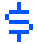

mako.
where markets diverge, we allocate.
Data.
Divergence.
Edge.
~2%
daily return
(avg)
+EV
positive edge
(historical)
<1s
trade latency
(target)
24/7
market coverage
(poly + kalshi)
Allocation Engine
Monitor Markets
// 001
Spot mispricing across Polymarket and Kalshi in real time
Calculate Edge
// 002
Measure expected return, slippage, and probability of execution
Size Position
// 003
Apply Kelly criterion with capital limits and portfolio constraints
Execute

// 004
Place orders on both legs at optimal timing